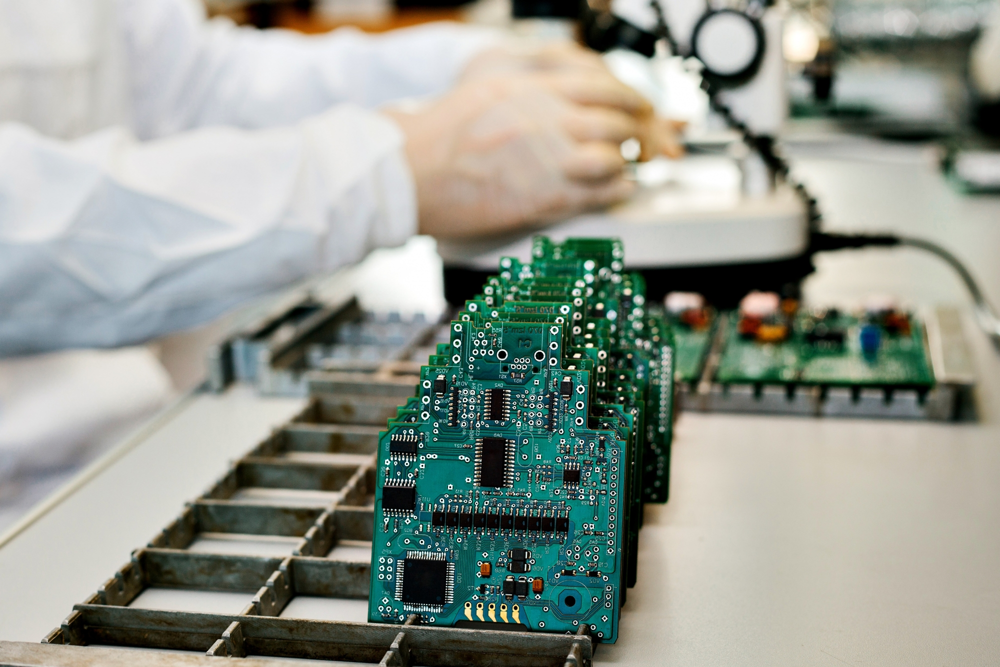

<!-- Container (Subdivisions Section) -->
<section id = "Subdivision">
    <div id="Subdivisions" class="container-fluid bg-blue0">
      
        <div class="col-sm-0">
          <h2>Subdivisions</h2>
          
      </div>
        <ul class="nav nav-tabs">
              <li class="active"><a data-toggle="tab" href="#tab-1">Mechanical</a></li>
              <li><a data-toggle="tab" href="#tab-2">Electrical</a></li>
              <li><a data-toggle="tab" href="#tab-3">Software</a></li>
              
        </ul>
          
            <div class="tab-content">
                <style>
                    .my_text
                    {
                        font-family:    Arial, Helvetica, sans-serif;
                        font-size:      15px;
                        font-weight:    bold;
                        color: rgb(17, 16, 16);
                    }
                  </style>
              
    
          <div class="tab-content">
              <div id="tab-1" class="tab-pane fade in active">
                  <div class="row">
                    <div class="tab-content">
                      <div id="tab-1" class="tab-pane fade in active">
                          <div class="row">
                            <div >
                              
                                <p> 
                                    The Mechanical Subdivision works actively to bring in innovations and develop practical designs for the vehicle. The main interests of the subdivision include planning, designing, and testing different parts, fabricating and waterproofing the entire vehicle which can be disassembled by a few screw sets within minutes.
                                  </p>
                                            
                                  <h4 style="padding-top:20px ;"><br>Designing, Testing and Manufacturing:<br>
            1.	Research: The research is the very first step of exploring and involves studying of various elements which includes structural components like rods, beams, chain mechanisms, thruster designs, conveyor belts, torpedoes, etc. And finalising and the materials to begin with design process.<br>
            2.	Design: Solidworks is the main designing tool helps to bring in the innovation from minds to virtual environment. Changes in the design is also a crucial to bring in maximum practicality and efficiency of the vehicle.<br>
            3.	Testing: The testing team is responsible for evaluating the performance of the robotic systems in different marine environments. They conduct various tests, including static and dynamic tests, to determine the robots' capabilities and limitations. The testing team also conducts sea trials to assess the robots' performance in real-world conditions.<br>
            4.	Manufacturing: It is the final step which brings design to reality. It invloves building the robotic systems based on the designs and specifications. Various manufacturing processes, including machining, welding, and assembly, to produce the robots' mechanical and electrical components. It is also important to keep in mind that the robots meet the required quality standards and undergo rigorous testing before they are deployed for use.<br>
      
            </b></h4>
                              </div>
                              <div style="padding-left:100px ;" class="col-lg-6 order-2 order-lg-1 mt-3 mt-lg-0" data-aos="fade-up" data-aos-delay="100">
                                  
                              </div>
                          </div>
    
                  
              </div>
              <div id="tab-2" class="tab-pane fade">
                  <div class="row">
                    <p>
                        The electrical team in marin robotics team is responsible for designing, developing, and maintaining the electrical systems and components of the robot. This team typically consists of electrical engineers, electronics specialists, and technicians with expertise in circuit design, power systems, and control systems. The electrical team plays a critical role in enabling the robot's electrical systems to function reliably and efficiently. Their work involves designing and integrating electrical components, ensuring proper power management, implementing control systems, and ensuring compliance with safety standards. Collaboration with other teams, such as mechanical and software teams, is essential to ensure seamless integration of electrical systems into the overall robot design.
                      </p>
                        <div style="padding-top:20px ;"  class="col-lg-6 order-2 order-lg-1 mt-3 mt-lg-0">
                          <h4><b>Designing and Manufacturing</b></h4>
                          <p class="fst-italic"> 
                            The electrical team works closely with other team members, such as mechanical and software engineers, to understand the robot's requirements and translate them into electrical specifications. They participate in system design discussions to ensure that the electrical architecture aligns with the overall robot design and functionality. The team designs and implements the power distribution system for the robot. This includes determining the power requirements of various components, selecting appropriate power sources (such as batteries or power supplies), designing wiring and connectors, and ensuring efficient power management and safety.
                        </p>
                      </div>
                      <div class="col-lg-6 order-2 order-lg-1 mt-3 mt-lg-0" data-aos="fade-up" data-aos-delay="100">
                        
                        </div>
                  </div>
                  <div class="row">
                      <div style="padding-top:50px ;" class="col-md-5 aos-init aos-animate" data-aos="fade-right"
                          data-aos-delay="100">
                          
                      </div>
                      <div style="margin-top:60px ;" class="col-md-7 pt-4 aos-init aos-animate" data-aos="fade-left" data-aos-delay="100">
                          <h4 style="padding-left:50px;"><b>Task and Testing</b></h4>
                          <p style="padding-left:50px;" class="fst-italic">
                              task & test of elec subdiv
                          </p>
                      </div>
                  </div>
              </div>
              <div class="tab-pane" id="tab-3">
                  <div class="row">
                      <div style="margin-bottom:50px ;" class="col-md-5 aos-init aos-animate" data-aos="fade-right"
                          data-aos-delay="100">
                          
                      </div>
                      <div style="margin-bottom:50px;" class="col-md-7 pt-4 aos-init aos-animate" data-aos="fade-left" data-aos-delay="100">
                          <p class="fst-italic">
                            to write about Software Subdivision
                          </p>
                      </div>
                      <div style="padding-top:20px ;" class="col-lg-6 order-2 order-lg-1 mt-3 mt-lg-0">
                          <h4><b> Navigation</b></h4>
                          <p class="fst-italic">
                              to write about navigation and controlling of software subdiv
                              
                          </p>
                      </div>
                      <div class="col-lg-6 order-1 order-lg-2 text-center"
                          class="embed-responsive embed-responsive-1by1">
                          <iframe style="margin-bottom:50px;"style="margin-top:50px;" width="450" height="315"
                              src="">
                          </iframe>
                      </div>
                  </div>
                  <div class="row">
                      <div style="margin-bottom:50px ;" class="col-md-5 aos-init aos-animate" data-aos="fade-right"
                          data-aos-delay="100">
                          
                      </div>
                      <div class="col-md-7 pt-4 aos-init aos-animate" data-aos="fade-left" data-aos-delay="100">
                          <h4><b>Localization And Perception</b></h4>
                          <p class="fst-italic">
                              to write about local & percep of software subdiv
                          </p>
                      </div>
                      <div class="col-lg-6 order-2 order-lg-1 mt-3 mt-lg-0">
                          <h4><b>Sensors</b></h4>
                          <p class="fst-italic">
                              To write about sensors used in the robot of Software subdiv
                          </p>
                      </div>
                      <div style="margin-bottom:50px ;" class="col-lg-6 order-1 order-lg-2 text-center">
                          
                      </div>
                  </div>
                  <div class="row">
                      <div style="margin-bottom:50px ;" class="col-md-5 aos-init aos-animate" data-aos="fade-right"
                          data-aos-delay="100">
                          
                      </div>
                      <div style="margin-top:50px;"class="col-md-7 pt-4 aos-init aos-animate" data-aos="fade-left" data-aos-delay="100">
                          <h4><b>State and Mission Planner</b></h4>
                          <p class="fst-italic">
                              to write about state & mission planner of software subdiv
                          </p>
                      </div>
                  </div>
              </div>
    
          </div>
    
      </div>
      </div>
      </section>
    <!-- End Tabs Section -->